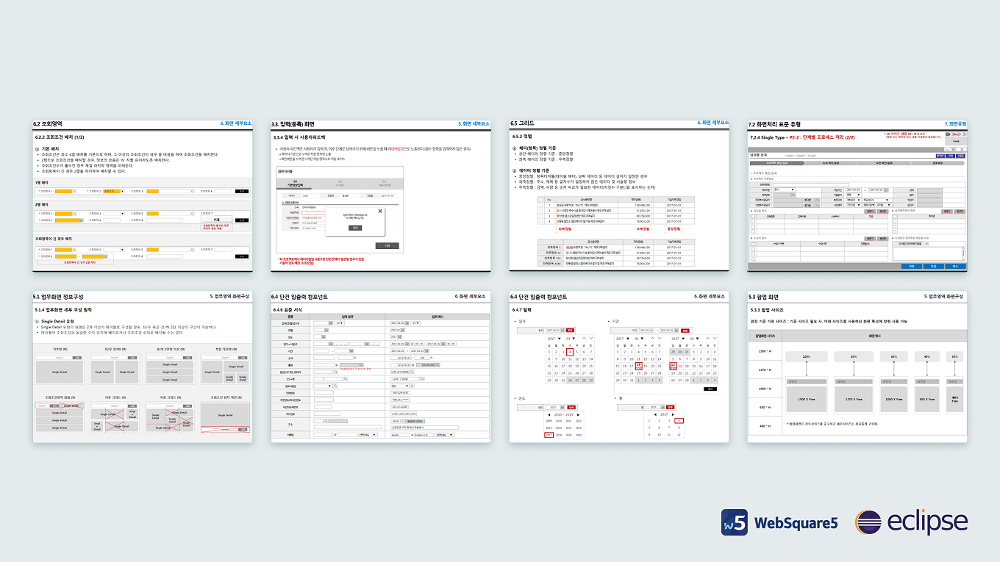
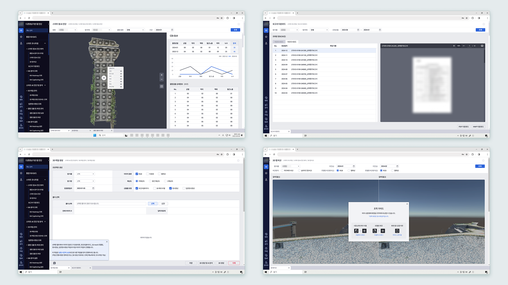

드론 영상기반 댐시설물 지능형 진단체계 구축
AI 분석·드론 영상 기반의 댐 진단 시각화 프로젝트에서 UI·UX 디자인과 퍼블리싱을 담당했습니다. 사전에 정의된 화면 가이드라인이 존재해, 기획자와 함께 관련 문서를 검토하며 UI 구조를 가이드에 맞게 정리했습니다.
가이드라인에 맞게 구성한 화면을 바탕으로, WebSquare 환경에서 퍼블리싱을 진행했습니다. 기존 퍼블리싱 방식과 다른 구조와 제약을 이해하며 작업을 이어갔으며, 시스템 요구사항에 맞춰 화면 구성과 인터랙션을 구현했습니다.
또한 GitLab 기반 형상관리 환경에서 퍼블리싱 협업을 진행하며, 화면 수정과 반영 과정을 관리했습니다.

공공기관 시스템의 표준 프레임워크로 WebSquare를 사용하고 있어 Eclipse 기반 WebSquare 환경에서 UI 작업을 진행했습니다. 처음 접하는 개발 환경이었지만 기존 시스템 구조와 모듈 방식, 화면 구성 방식을 빠르게 파악하며 작업을 진행했습니다. 기업에서 제공한 UI 가이드 문서를 기반으로 화면 구성 원칙을 검토하며 화면 구조와 레이아웃을 설계했습니다.

기존 시스템에는 다수의 스타일 규칙이 이미 적용되어 있었으며, 해당 스타일을 수정하거나 제거할 수 없는 환경이었습니다. 이러한 제약 속에서 CSS 우선순위와 적용 범위를 면밀히 검토하며 기존 스타일과 충돌하지 않도록 화면 스타일을 구현했습니다.
또한 개발 환경에서는 정상적으로 보이던 UI가 실제 운영 환경에서 다르게 표현되는 문제가 발생하기도 했습니다. 따라서 현장 개발자와 지속적으로 소통하며 원인을 파악하고 수정 방향을 조율했습니다. 이러한 과정을 통해 실제 서비스 환경에서도 안정적으로 동작하는 UI를 구현하는 경험과 함께 협업 기반의 문제 해결 과정을 경험할 수 있었습니다.